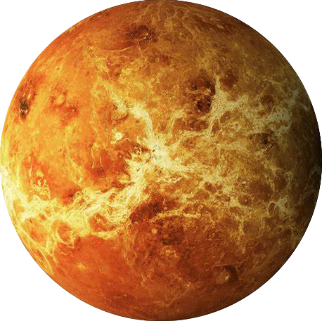

|  | VENUS:Venus is the second planet from the Sun. It is a rocky planet with the densest atmosphere of all the rocky bodies in the Solar System, and the only one with a mass and size that is close to that of its orbital neighbour Earth. Orbiting inferiorly (inside of Earth's orbit), it appears in Earth's sky always close to the Sun, as either a "morning star" or an "evening star". While this is also true for Mercury, Venus appears much more prominently, since it is the third brightest object in Earth's sky after the Moon and the Sun,[20][21] appearing brighter than any other star-like classical planet or any fixed star. With such prominence in Earth's sky, Venus has historically been a common and important object for humans, in both their cultures and astronomy. Venus has a weak induced magnetosphere and an especially thick carbon dioxide atmosphere, which creates, together with its global sulfuric acid cloud cover, an extreme greenhouse effect. This results at the surface in a mean temperature of 737 K (464 °C; 867 °F) and a crushing pressure of 92 times that of Earth's at sea level, turning the air into a supercritical fluid, while at cloudy altitudes of 50 km (30 mi) above the surface, the pressure, temperature and also radiation are very much like at Earth's surface. |